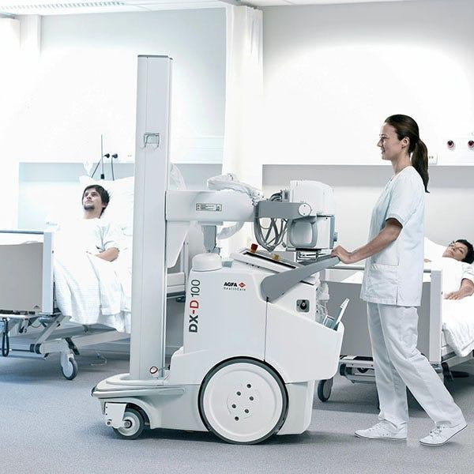
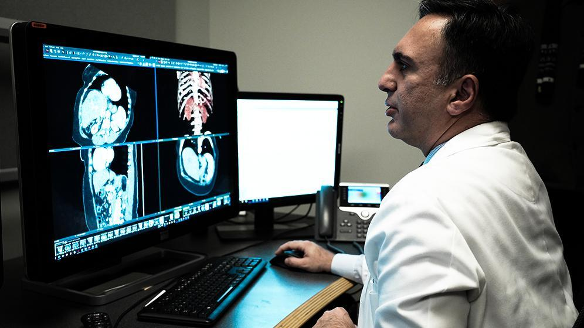
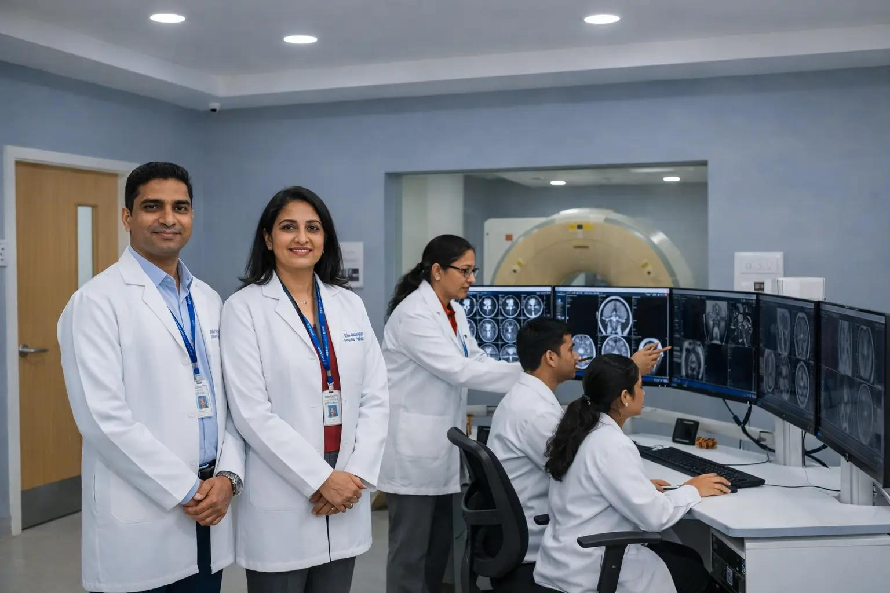

Diagnostic Imaging Technology
Engineered for clinical certainty. Our facility integrates hospital-grade direct radiography, high-field MRI, multi-slice computed tomography, and certified DICOM cloud pipelines.
Advanced Imaging Platforms
Explore the flagship diagnostic machinery powering precision diagnosis at our facility.
GE SIGNA Pioneer High-Field MRI
High-definition magnetic resonance suite equipped with wide 70cm patient bore, acoustic noise reduction, and ultra-fast deep-learning image reconstruction.
- Sub-millimeter neuro-vascular imaging
- Claustrophobia-friendly ambient lighting
- Exceptional articular cartilage resolution
Precision 12-Channel Digital ECG
Direct analog-to-digital signal conversion capturing minute myocardial depolarization voltages with zero electromagnetic interference.
Our 12-lead digital diagnostic electrocardiograph features active AC line noise dampening, automatic baseline wandering compensation, and high-frequency digital sampling (up to 1,000 Hz) to record pristine P-Q-R-S-T complexes and detect subtle cardiac conduction abnormalities.
- Direct DICOM XML data transfer to central cardiologist review consoles
- Real-time 6-lead on-screen preview prior to thermal strip output
- Integrated pacemaker pulse spike detection circuitry
Clinical Standards & Calibration Protocols
Every machine in our facility undergoes rigorous daily, weekly, and monthly calibration checks.




AERB Radiation Compliance
All radiographic equipment is fully certified by the Atomic Energy Regulatory Board (AERB) and operates with quarterly radiation safety audits.
Daily Phantom QA Testing
Every morning before the first patient scan, standardized calibration phantoms verify acoustic focal sensitivity, spatial contrast, and geometric accuracy.
PACS Redundancy & Backups
Our triple-redundant cloud and on-premise storage architecture guarantees zero data loss and 99.99% image availability for ongoing medical records.
Double-Blind Peer Review
Randomized internal quality sampling ensures 5% of all daily reports are independently re-reviewed by a second senior radiologist for diagnostic concordance.
Private & Secure Digital Reports
Bank-grade cryptographic safeguards protecting medical imagery, patient identity, and doctor referral communications.
256-Bit SSL Cloud Transfer
Every transmission of DICOM slice series between scanning suites and doctor viewing portals uses end-to-end TLS 1.3 encryption.
Triple-Tier SAN Archival
On-premise primary NVMe cache mirrored to secondary on-site storage area network and tertiary offsite compliant cloud vault.
Role-Based Authentication
Strict identity authentication ensuring only verified referring physicians and the patient can access their specific medical files.
PCPNDT & HIPAA Compliance
Rigid statutory data logging, anonymized image auditing, and statutory government registry compliance across all sonography workflows.
Green Diagnostic Imaging Commitments
Minimizing the environmental footprint of medical imaging through dry technology and energy conservation.
100% Chemical-Free Processing
Direct digital capture completely eliminates toxic liquid developer chemicals, fixer fixatives, and heavy metal darkroom effluent.
Smart Generator Standby
High-frequency generator tubes enter low-power sleep modes automatically between exposures, reducing facility power consumption by 40%.
Digital Cloud Reporting
Encouraging digital QR-code viewing and WhatsApp PDF delivery saves over 25,000 physical paper sheets and plastic envelopes annually.
Eco-Shielding Protective Wear
Modern bismuth and antimony composite radiation protection aprons that replace traditional hazardous lead with recyclable shielding.